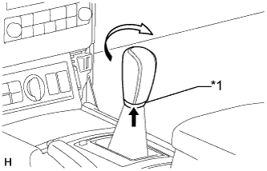

ПЕРЕХОДНИК СТЕРЕОГНЕЗДА В СБОРЕ > УСТАНОВКА |
| 1. УСТАНОВИТЕ ГНЕЗДО ДЛЯ НАУШНИКОВ |
 |
Введите в зацепление 4 захвата, чтобы установить 2 гнезда для наушников.
Установите 2 зажима и подсоедините 2 разъема.
| 2. УСТАНОВИТЕ ВИДЕОВЫХОД (ВИДЕОАДАПТЕР) |
Введите в зацепление 4 захвата, чтобы установить видеовыход.
Установите зажим и подсоедините разъем.
| 3. УСТАНОВИТЕ ЗАДНЮЮ ПАНЕЛЬ КОНСОЛИ В СБОРЕ |
Подсоедините все разъемы.
Установите заднюю концевую панель консоли и закрепите ее 4 фиксаторами и 4 захватами.
| 4. УСТАНОВИТЕ ПЕРЕХОДНИК СТЕРЕОГНЕЗДА № 1 В СБОРЕ (для моделей с автоматической трансмиссией) |
Введите в зацепление 2 захвата, чтобы установить переходник стереогнезда.
| 5. УСТАНОВИТЕ ПЕРЕХОДНИК СТЕРЕОГНЕЗДА № 1 В СБОРЕ (для моделей с механической трансмиссией) |
Введите в зацепление 2 захвата, чтобы установить переходник стереогнезда.
| 6. УСТАНОВИТЕ ПАНЕЛЬ КОНСОЛИ (для моделей с автоматической трансмиссией) |
Подсоедините все разъемы.
Введите в зацепление 8 фиксаторов и 2 захвата и установите облицовку панели пола.
| 7. УСТАНОВИТЕ ОБЛИЦОВКУ ПАНЕЛИ ПОЛА В СБОРЕ (для моделей с механической трансмиссией) |
Подсоедините все разъемы.
Введите в зацепление 8 фиксаторов и 2 захвата и установите облицовку панели пола.
| 8. УСТАНОВИТЕ РУКОЯТКУ РЫЧАГА ПЕРЕКЛЮЧЕНИЯ ПЕРЕДАЧ В СБОРЕ |
|  |
Установите рукоятку рычага переключения передач и поверните ее в направлении, указанном стрелкой.
Установите чехол лючка рычага переключения передач на рукоятку рычага переключения передач.
| *1 | Чехол лючка рычага переключения передач |
| 9. УСТАНОВИТЕ ПЕРЕДНЮЮ НАКЛАДКУ ВЕРХНЕЙ ОБЛИЦОВКИ ПАНЕЛИ ПОЛА |
Введите в зацепление 5 фиксаторов, чтобы установить переднюю накладку верхней облицовки панели пола.
| 10. УСТАНОВИТЕ ЛЕВУЮ ОТДЕЛОЧНУЮ НАКЛАДКУ ПАНЕЛИ ПРИБОРОВ |
Введите в зацепление 4 фиксатора, чтобы установить крайнюю отделочную накладку панели приборов.
| 11. УСТАНОВИТЕ ПРАВУЮ ОТДЕЛОЧНУЮ НАКЛАДКУ ПАНЕЛИ ПРИБОРОВ |
Подсоедините разъем.
Введите в зацепление 4 фиксатора, чтобы установить крайнюю отделочную накладку панели приборов.
| 12. УСТАНОВИТЕ ПОДУШКУ ОТДЕЛОЧНОЙ НАКЛАДКИ ПАНЕЛИ ПРИБОРОВ № 2 |
Введите в зацепление 5 фиксаторов, чтобы установить подушку отделочной накладки панели приборов № 2.
| 13. УСТАНОВИТЕ ПОДУШКУ ОТДЕЛОЧНОЙ НАКЛАДКИ ПАНЕЛИ ПРИБОРОВ № 1 |
| 14. УСТАНОВИТЕ ИНТЕГРИРОВАННУЮ ПАНЕЛЬ УПРАВЛЕНИЯ В СБОРЕ |
 |
Подсоедините разъем.
Установите интегрированную панель управления в сборе и введите в зацепление 4 фиксатора.
| 15. ПОДСОЕДИНИТЕ ПРОВОД К ОТРИЦАТЕЛЬНОМУ (-) ВЫВОДУ АККУМУЛЯТОРНОЙ БАТАРЕИ |